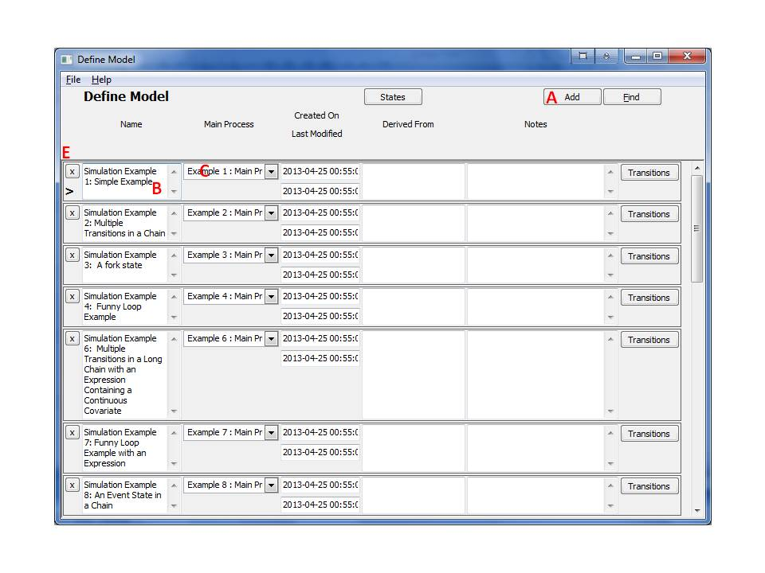

8 Model
8.1 Definitions of a Model
Model: A specification of the disease progression created by the user within the system. The progression is defined as a set of states and processes, and of transitions between these states. Transitions hold transition probabilities that describe transition from one state to another.
8.2 Working with Models
8.2.1 Creating a Model
- From the main window, click the 'Models' on the left navigation pane.

- This form shows all of the studies and models in the project. To add a new study or model, press the 'Add' button (A), and a new row will appear in the table.
- Give the model a name (B).
- Click on the Transitions button to define transitions related to the Model. Transitions of a model will hold probabilities.
- Close the form or move to the next record to save the entry. This will trigger validity checking of the data entered and if no error message is displayed, then the data has been saved to memory. Note that the information is not yet saved to a file.
8.2.2 Removing a Model
Open the Model form. Identify the row to be removed, and click the 'X' (delete) button for that row. This may require deletion of other entities and may be difficult if the deletion candidate was extensively used.